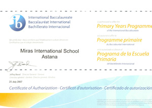
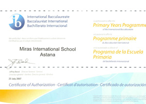
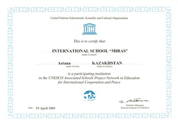
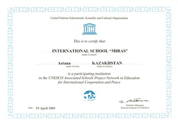

Структура школы включает 3 ступени обучения:
- Начальная школа [2-11 лет]: детский сад, предшкола, 1-5 классы
- Основная школа [11-16 лет]: 6-10 классы
- Старшая школа [16-18 лет]: 11 класс Казахстанской программы, 11-12 классы Дипломной программы Международного Бакалавриата
Французская школа [3-18 лет]: детский сад - 12 класс
Языки обучения в школе - английский, русский, французский
Международная школа «Мирас», Нур-Султан
- авторизована по программам Международного Бакалавриата [IB] для всех ступеней обучения [IB PYP, IB MYP, IB DP]; Диплом Международного Бакалавриата [IB Diploma] дает возможность поступать в ведущие университеты мира без вступительных экзаменов;
- аккредитована Советом Международных школ [CIS] и Ассоциацией школ и колледжей Новой Англии [NEASC] на соответствие международным стандартам; Кембриджским университетом в качестве Международного экзаменационного центра по приему экзаменов IGCSE;
- является действительным членом организации Международного Бакалавриата [IB], Совета Международных школ [CIS], Ассоциации школ и колледжей Новой Англии [NEASC], Европейского Совета Международных школ [ECIS], Ассоциации IB школ стран Ближнего Востока [MEIBA], Ассоциации школ Международного Бакалавриата стран СНГ [АШМБ], является Ассоциированной школой ЮНЕСКО.
- Французская школа аккредитована Министерством Образования Франции, по завершении учащиеся получают Diplome National du Brevet и Diplome de Baccalaureat franfais.
- Многонациональный состав учащихся и учителей из разных стран
- Широкий выбор кружков и секций дополнительного образования
- Современная материально-техническая и ресурсная база
Школа «Мирас» города Нур-Султан аккредитована Советом международных школ (CIS) и Ассоциацией школ и колледжей Новой Англии (NEASC) в мае 2004.
Школа «Мирас» города Нур-Султан авторизована организацией Международного Бакалавриата (IBO) по программе Основной школы (MYP) (возраст 12–16 лет) в 2004 году, по программе Начальной школы (PYP) (возраст 3–11 лет) в 2007 году, по Дипломной программе (DP) (возраст 16–18 лет) в 2011 году.

 


 
